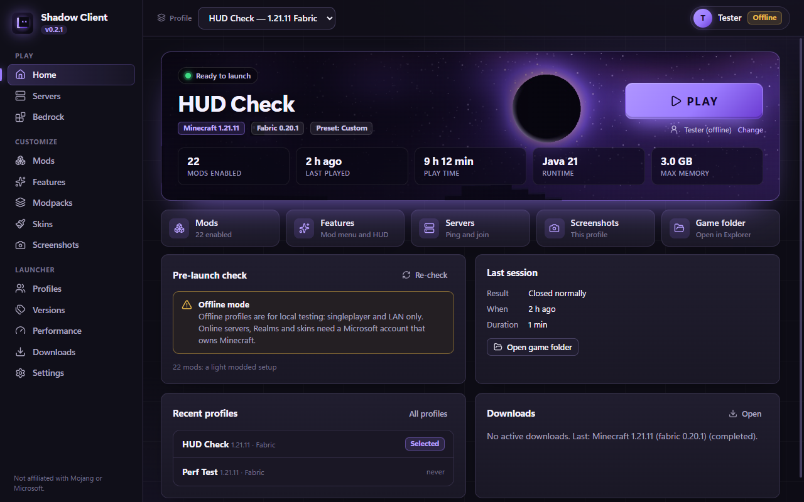
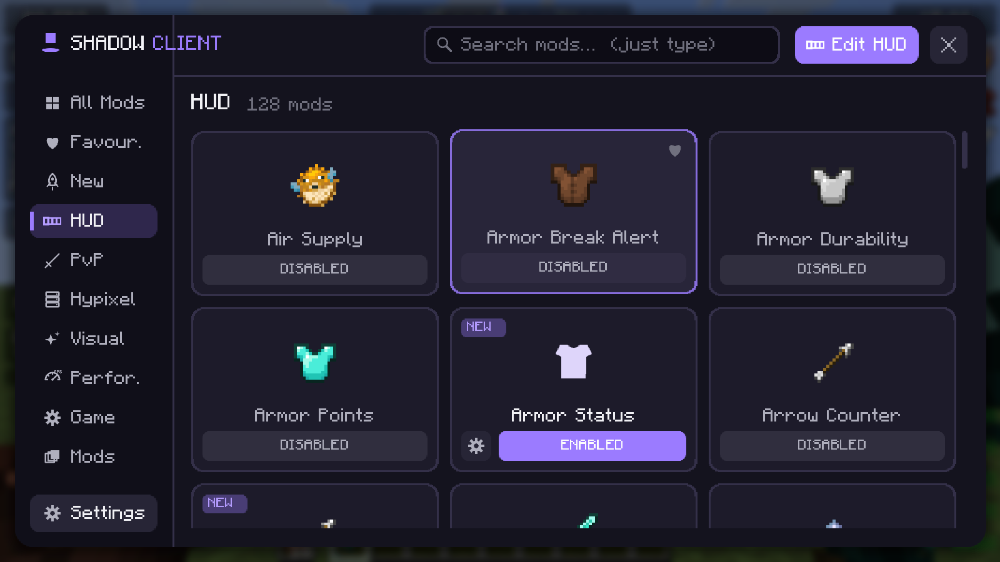
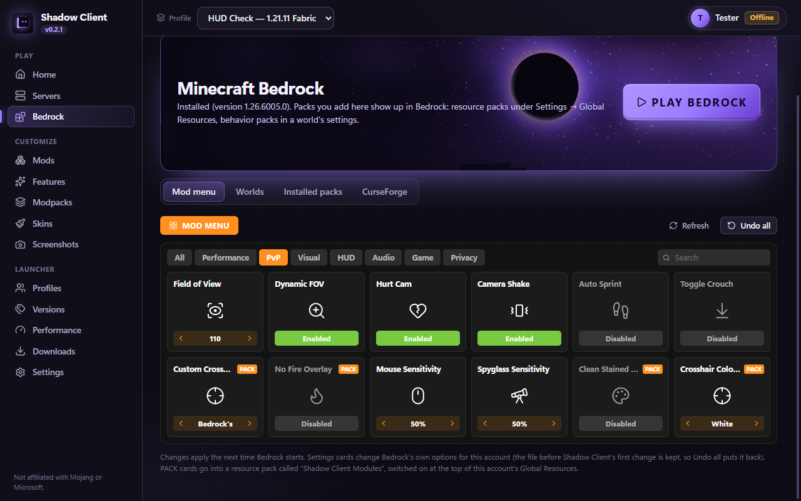

Lunar-style mod menu
Right Shift opens a card grid with categories, search and favourites. Every module has its own settings page with sliders, switches, colour pickers and keybinds. Pick a theme and accent colour.
Shadow Client is a lightweight Minecraft launcher with its own Lunar-style client built in. Press Right Shift in game for 260+ HUD, PvP, Hypixel, visual and performance modules, all made by Shadow Client. Java and Bedrock in one app.


In game · Right ShiftBuilt to launch fast and stay out of your way, even on older PCs.
Right Shift opens a card grid with categories, search and favourites. Every module has its own settings page with sliders, switches, colour pickers and keybinds. Pick a theme and accent colour.
22 HUD modules: FPS, CPS, keystrokes, ping, armor, potions, coordinates, compass, reach, combo, scoreboard and more. Drag, snap and resize them in the HUD editor, and style each one: colours, chroma, backgrounds, borders, brackets.
Zoom, freelook, a custom crosshair, hit colour, motion blur, low fire and shield, counters for totems, gapples, pearls and 25 more items, cooldowns, a Target HUD with totem pops, kills and K/D, waypoints, Auto Text hotkeys and 12 PvP alerts.
Switch the heaviest settings off in one click, and switch FPS Boost off to get your exact settings back. Presets tuned to your PC's RAM, CPU and GPU.
AutoGG, AutoGLHF, AutoTip, AutoBoop, Nick Hider, chat heads and ping in tab, right in the mod menu's Hypixel category.
Browse Modrinth (and CurseForge with a key). Shadow Client checks versions, loaders, dependencies and known conflicts before anything is installed. Share your pack with a link: friends click it and get the same mods.
A skin editor and library, separate profiles for every version and mod setup, and your worlds kept safe when you change versions.
Every download is checked against its published hash. Sign-in happens on microsoft.com and tokens stay encrypted on your PC. No telemetry.

Start Minecraft Bedrock from Shadow Client and tune it with the same card layout: 80 modules across Performance, PvP, Visual, HUD, Audio, Game and Privacy. VSync, frame pacing, sensitivity, FOV, hurt cam, auto sprint, an 11-slider sound mixer, a custom crosshair in any colour, clean stained glass and the Shadow background.
The real app, no mock-ups. Click to enlarge.
Version 0.1.0 · Windows 10 and 11, 64-bit
Windows may show "Windows protected your PC" because the installer isn't code-signed yet. Click More info → Run anyway.
Both are free. Here's what Shadow Client adds.
| Shadow Client | Official launcher | |
|---|---|---|
| Every Java version, vanilla and Fabric | Yes | Yes |
| In-game mod menu (Right Shift) with 260+ modules and a HUD editor | Yes | No |
| PvP HUD: item counters, cooldowns, Target HUD, alerts | Yes | No |
| Browse and install mods and modpacks, with compatibility checks | Yes | No |
| Performance presets based on your PC | Yes | No |
| Server list with live ping and one-click join | Yes | No |
| Bedrock mod menu, world backups and packs from CurseForge | Yes | No |
| Screenshot gallery and a crash helper that explains crashes | Yes | No |
| Microsoft sign-in for online play | Through the official launcher for now | Yes |
Yes. No ads, no account of its own, no telemetry.
Yes. Online play needs your Microsoft account. You can sign in inside Shadow Client once its Microsoft app registration is set up (Settings → Accounts & services). Or use Profiles → Add to official launcher: your Shadow profile, with its mods and mod menu, then appears in the official Minecraft Launcher and plays online with your normal sign-in. It's the only installation shown there; your others are put aside and come back when you turn off Only show the profile you open in Settings.
Shadow Client's modules are the visual and quality-of-life kind found in Lunar and Feather: HUD, zoom, freelook, toggle sprint, FPS settings. It has no reach, auto-clicker or other cheats. Some servers restrict certain mods (for example freelook), so check the rules of the server you play on.
Any Java Edition version can be installed and played. The built-in mod menu and its modules are made for 1.21.11 with Fabric; other versions get mods from Modrinth with compatibility checks.
Bedrock can't load Java-style mods. Shadow Client starts it, changes Bedrock's own settings, and builds a small resource pack for things like the crosshair. That's what the Bedrock mod menu does.
On Profiles, press Share on a profile and send the link. Your friend opens it, presses Open in Shadow Client, and gets a new profile with the same Minecraft version, loader, mods, resource packs and shaders, downloaded from Modrinth and CurseForge. They see the full list before anything installs. Nothing is uploaded: the pack is inside the link. Mods you added by hand that aren't on Modrinth or CurseForge are left out.
Open Servers, add the server's address, and press Join. Shadow Client starts your selected profile and connects as soon as the game is up. Bedrock servers have a Join button too.
Shadow Client reads the crash report and tells you the likely cause on the Home page, for example a mod that doesn't fit your version, running out of memory, or the graphics driver. It names the mod Fabric suspects when there is one.
From 0.2.2, Shadow Client tells you when a new version is out ("Update needed") and updates itself when you press Update now; your profiles, worlds and settings stay. From 0.4.0 the MSI version updates itself too. Older versions show a bar at the top: download the new installer and run it over your current version. The portable version: download the new zip and replace the old folder's files (keep its data folder).
No. Shadow Client keeps its own profiles and game files. It reads your official installation only when you import from it (Profiles → Add existing profile copies its mods and settings into a new Shadow Client profile with the same name; the original stays as it is), and adds a profile to the official launcher only when you ask (its profile list is backed up first).